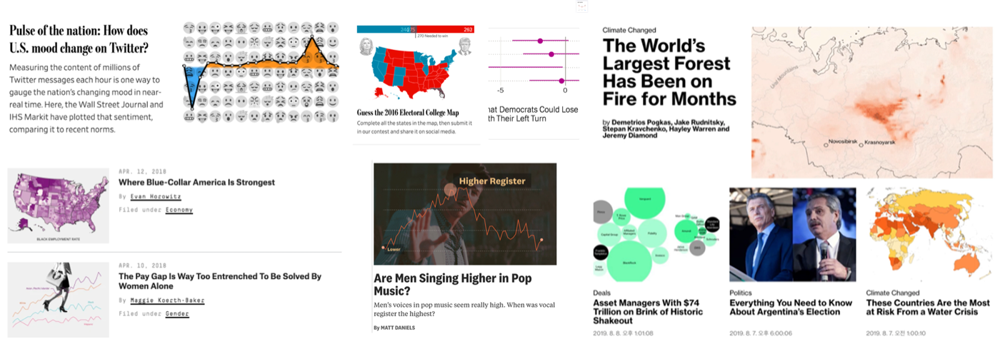
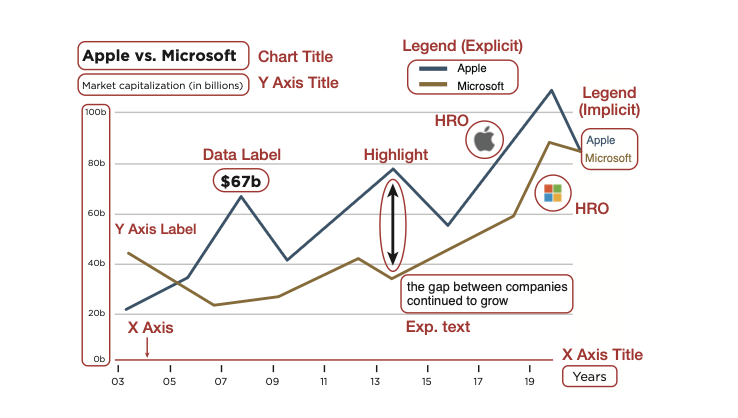
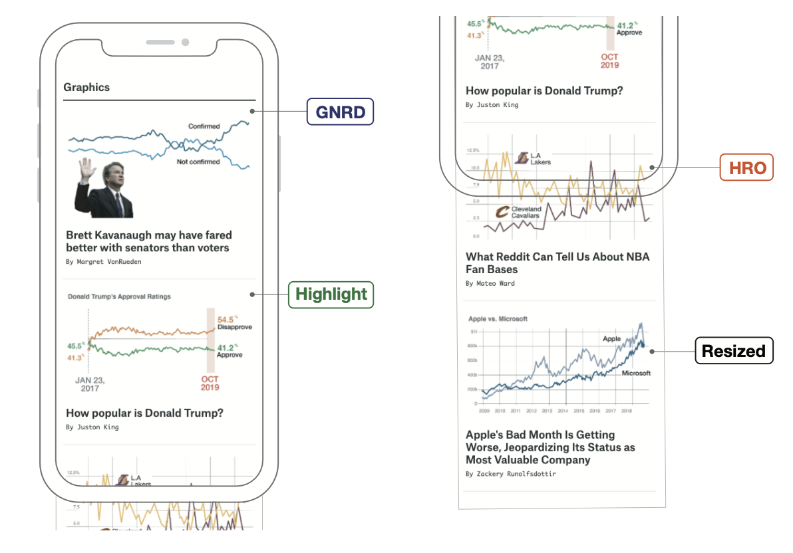
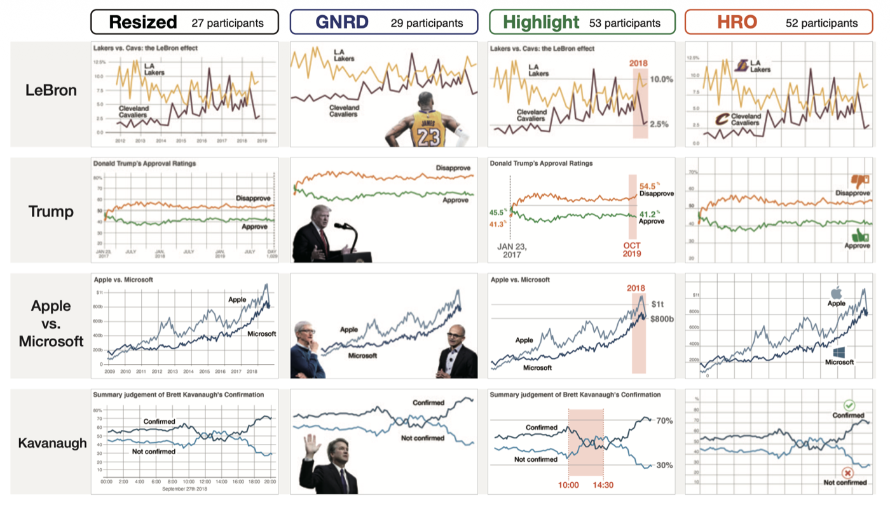
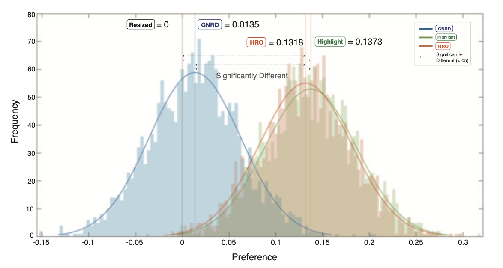
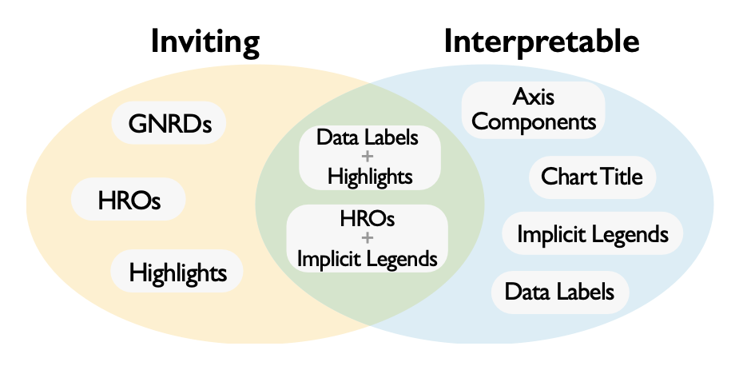
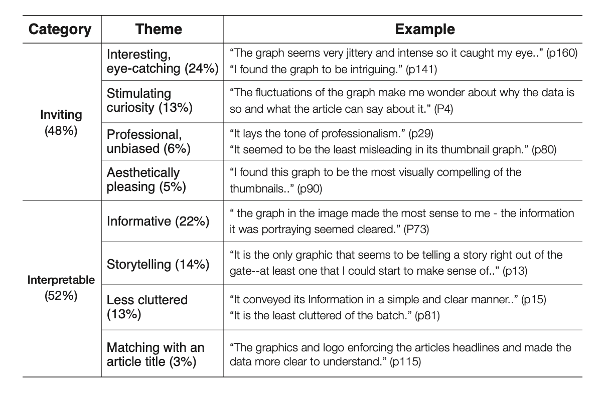
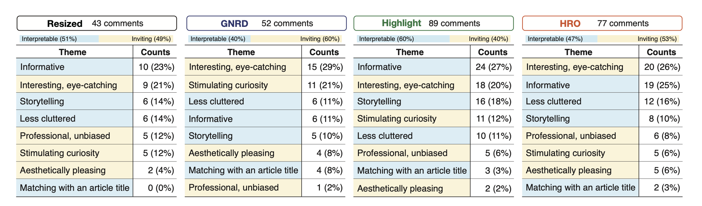

Peer-Reviewed Research — 1st Author
Designing Visualization Thumbnails: A Reader Preference Study Across 4 Chart Design Types
A 161-participant reader preference experiment turning untested practitioner intuition into statistically validated thumbnail design guidance.
Presentation Video
Overview
News media increasingly embed charts directly into article thumbnails, but there had been no research into what makes these "visualization thumbnails" effective. As first author on this project, I ran a 3-step empirical study — a survey of real news thumbnails, a practitioner interview study, and a 161-participant reader preference experiment — to answer a concrete design question: which visualization thumbnail designs actually work, and why? The results were published as two peer-reviewed IEEE papers, replacing untested practitioner intuition with statistically validated, reader-tested design guidance.
Problem & Context
Visualization thumbnails were a fast-growing design pattern across major U.S. news outlets — FiveThirtyEight, The Wall Street Journal Graphics, and The New York Times' "The Upshot" among them — but many were difficult to read, and even the people designing them lacked a reliable answer for why:

- Some thumbnails cropped charts so heavily, or shrank text so much, that they became illegible, while others stripped away nearly all chart context in favor of a photo
- Interviews with 6 industry practitioners found clear goals (preserving brand identity, catching the reader's eye in a crowded social feed, reflecting an article's unique commissioned artwork) but no reliable method — they conceded there were "no hard and fast rules of thumb," and two of the six admitted they avoided visualization in thumbnails altogether, preferring photos, because charts felt "cold, intimidating, or inaccessible" to readers
- This gap between design intuition and actual reader behavior — compounded by the fact that thumbnail design is often handed off to designers or social-media producers who weren't involved in writing the article — defined the research question
Process & Approach
Step 1 — Design Convention Survey
Collected an initial corpus of 139 news articles published between Nov 1–Dec 31, 2018 from 7 major outlets, narrowing to a final set of 67 thumbnails (breakdown below). Three of the paper's co-authors independently coded each thumbnail against a chart-component taxonomy, reaching 96% agreement (Fleiss' Kappa = 0.75) after iterative discussion — surfacing two dominant strategies by outlet type: online-native outlets like FiveThirtyEight and WSJ rebuild thumbnails from scratch, while traditional outlets like The New York Times and The Economist mostly crop or resize the original chart. Complemented this with structured interviews with 6 industry practitioners to surface design intent and pain points directly from the people building these thumbnails.
| Stage | Count |
|---|---|
| Initial corpus (Nov 1–Dec 31, 2018, 7 outlets) | 139 |
| Excluded — no visualization in thumbnail | −48 |
| Excluded — non-axis-based (maps, pie charts) | −24 |
| Final coded thumbnail set | 67 |

Step 2 — Design Space Definition
Distilled the survey findings into 4 representative thumbnail design types based on chart-component treatment — Resized, GNRD, Highlight, and HRO (detailed below). Built a controlled stimulus set — 4 design types × 4 real news articles = 16 thumbnails — and validated its design quality with 9 practitioners at a data journalism conference workshop before running the main study.
A straight scale-down of the original chart, with no other alteration.
Axis information stripped out, a photo composited on for artistic effect.
A specific data range emphasized with a colored highlight block and large data labels.
Icons or logos inserted onto a simplified chart as a visual legend.


Step 3 — Reader Preference Experiment
Recruited 237 participants through Prolific and excluded those who failed data-quality checks, leaving 161 for analysis. Each participant viewed one design-type condition (between-subjects), clicked the thumbnail they most wanted to read, and wrote a free-text explanation of their choice. A 2,000-iteration Monte Carlo simulation confirmed selections were not significantly affected by thumbnail position (p < .05).
| Stage | Count |
|---|---|
| Recruited via Prolific | 237 |
| Excluded — failed consistency check | −40 |
| Excluded — topic-preference-only reasoning | −36 |
| Final analyzed sample | 161 |
Solution & Design
Analyzed the results against two research questions — which design types readers actually want to click and why, and what role each thumbnail component plays — through three complementary methods:
- Statistical significance testing: a chi-squared test confirmed design type significantly affects thumbnail preference (χ² = 14.975, df = 3, N = 161, p = .0018)
- Thurstonian preference modeling: a paired-comparison model quantifying exactly how much more preferred Highlight and HRO designs were
- Thematic coding of all 261 free-text choice explanations, independently coded by three authors and reconciled to 95.8% agreement (Fleiss' Kappa = 0.26)

96% agreement, Fleiss' Kappa = 0.75
95.8% agreement, Fleiss' Kappa = 0.26
The thematic coding mapped cleanly onto a two-category model of thumbnail component roles: GNRDs, HROs, and highlights function as "inviting" components that draw the reader's eye, while axes, implicit legends, and data labels function as "interpretable" components that convey the article's actual content — with a data label paired with a highlight, or an implicit legend paired with an HRO, able to do both jobs at once.


Design suggestion 1: pairing a summarized chart with descriptive text — a chart title or one standout data-label number — makes a thumbnail meaningfully more interpretable.
Design suggestion 2: adding highlights or visual embellishments makes a thumbnail more inviting and click-worthy, though GNRDs and HROs carry a documented risk of misleading readers about the underlying data and should be used with that trade-off in mind.
Impact & Outcome
The chi-squared test confirmed that thumbnail design type has a statistically significant effect on reader preference (χ² = 14.975, df = 3, N = 161, p = .0018). Thurstonian preference modeling showed Highlight and HRO thumbnails were preferred over Resized and GNRD thumbnails with 99.5%–99.7% probability across all four pairwise comparisons.
Thematic coding of the 261 free-text choice explanations found inviting (48%) and interpretable (52%) as the two consistent drivers of preference overall, with a clear split by design type: image-centric designs were chosen primarily for visual appeal, while chart-centric designs were chosen primarily for the information they conveyed.

These findings were published as two peer-reviewed IEEE papers — an IEEE VIS 2019 short paper on the survey methodology and a significantly extended IEEE Transactions on Visualization and Computer Graphics journal paper covering the full study, which I presented at IEEE VIS 2023 — turning previously untested practitioner intuition into statistically defensible, reader-tested, peer-reviewed design guidance.
Reflection
This project sits at the most quantitative end of my portfolio — the goal wasn't to validate a single product decision, but to produce generalizable, statistically defensible design guidance through a formal between-subjects experiment, carried all the way through peer review. Three lessons stood out. First, qualitative coding done by more than one person needs explicit process rules, not just a shared taxonomy: I set three personal rules to keep the lead coder's opinion from dominating group consensus (state your own read last, always discuss disagreement even over a single dissenting vote, and majority-rule any comment the group can't agree on, excluding it from the final consensus). Second, not all coding tasks deserve the same reliability bar — our objective chart-component classification reached 96% agreement (Fleiss' Kappa = 0.75), while our open-ended, subjective thematic coding of choice-reasons settled for a lower but still meaningful 95.8% agreement (Kappa = 0.26); reporting both honestly, rather than picking whichever number looked better, mattered more than hitting one universal threshold. Third, experimental realism has to be tuned deliberately — an early version of the stimulus set held the article fixed and varied only the chart element, which produced near-identical-looking conditions and felt artificial in review; switching to the final design (one design type per article, varied across four different articles) better matched how readers actually encounter thumbnails across a real newspaper site, and produced more natural, ecologically valid choices.